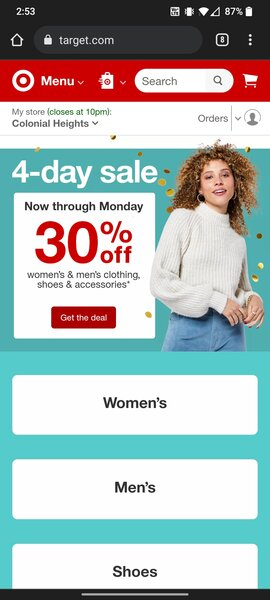
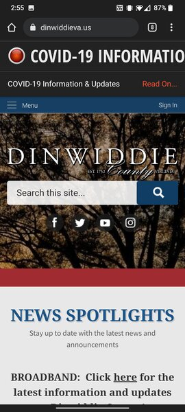

Visual Hierarchy
Craftsman
Craftsman.comIn this example, you can see how Craftsman incorporates imagery and font sizes to guide the viewer and grab the viewer's attention toward what they want you to follow or read. In this example, they are very keen to have website viewers see their new mechanic tools.
PARC: Alignment
Target
Target.com
Here you are able to see the use of alignment on Target's mobile site. They grab your attention with a revolver ad at the top, which is a great example of hierarchy but directly below it they use alignment to show their base menu of Men, Women and Shoes to draw the user into the menu for clothing.
White Space & Clean Design
Dinwiddie County
Dinwiddie, VA.com
The use of "white" can be argued, however, Dinwiddie County's website is a great example of minimizing what is viewed from a mobile phone. They have a few key objects that they want to draw the viewer's attention to and instead of filling the remaining space with links or cluttering the page, they leave a picturesque background to leave spacing on the page while clearly showing the key features such as the search menu and nested sub menu in the top left corner.